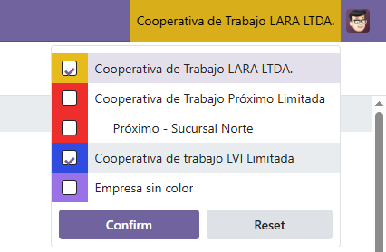
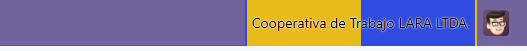

Paints the company switcher with the color defined on each company: the systray button shows the active company's color (or one stripe per selected company), and every row of the dropdown shows a solid block of its company's color.


Developed by Zinapsia for Odoo 19.